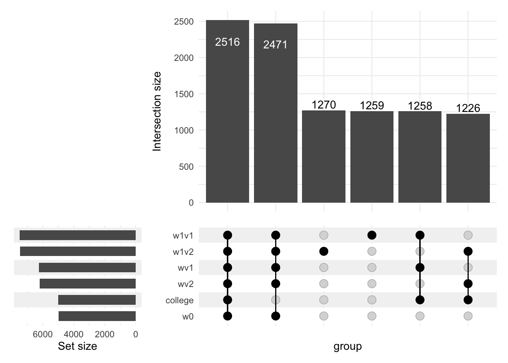

3 Плохой контроль
3.1 Устройство данных. Плохой контроль.
Главная мысль семинара: контрольные переменные – это не всегда хорошо! Нужно выбирать их вдумчиво, а не закидывать в регрессию всё то, что удалось скачать.
Существует 3 основных варианта устройства данных, когда мы хотим оценить эффект от воздействия \(T\):
- Идеальный эксперимент
- Пропуск существенной переменной
- Плохой контроль
3.2 Пример из (Angrist, Pischke, 2009)
Дальше разберем проблему плохого контроля на примере 3.2.3 из книги Энгриста и Пишке “Mostly harmless econometrics”. Тут я перевела условия заданий, оригинал задачки лежит на on.econ в разделе “Неделя 2” под названием “Ozier Bad control exercise”.
Ниже общая схема задачи:
3.2.1 Генерация данных
a) Сгенерируйте набор данных из 10 000 наблюдений. Обязательно установите начальное число, чтобы ваш код давал идентичные результаты при повтороном запуске. Все четыре перечисленные переменные не должны зависеть друг от друга.
- Сгенерируйте переменную способности равномерно распределенную между -1 и 1;
- Сгенерируйте индикаторную переменную колледжа, равную единице для случайной половины наблюдений;
- Сгенерируйте \(\varepsilon_1\) и \(\varepsilon_2\) так, чтобы каждая из них имела стандартное нормальное распределение.
n <- 10000
set.seed(123)
ability <- runif(n, min=-1, max=1) # способности людей
college <- c(rep(0,n/2), rep(1,n/2)) # факт обучения в колледже
epsilon1 <- rnorm(n,sd=1) # врожденная склонность быть белым воротничком
epsilon2 <- rnorm(n,sd=1) # случайный шок дохода
cor(data.frame(ability, college, epsilon1, epsilon2)) # все переменные получились независимыми ability college epsilon1 epsilon2
ability 1.0000000000 0.0003448777 -0.011632887 -0.011652074
college 0.0003448777 1.0000000000 0.006161457 0.008334883
epsilon1 -0.0116328869 0.0061614570 1.000000000 0.011595971
epsilon2 -0.0116520742 0.0083348828 0.011595971 1.000000000b) Сгенерируйте \(w_0\) – переменную, указывающую, будет ли кто-то белым воротничком независимо от факта обучения в колледже. Интерпретируйте \(\varepsilon_1\) как склонность быть белым воротничком, тогда \(w_0\) должен быть равен 1, когда \(\varepsilon_1\) больше нуля, и должен быть равен нулю в противном случае.
w0 <- as.numeric(epsilon1>0) # Индикатор белого воротничкаc) Затем сгенерируйте две версии переменной-индикатора быть белым воротничком при условии обучения в колледже для двух сценариев:
- В первом сценарии колледж превращает всех работников с низкими способностями (\(ability<0\)) в белых воротничков, но это не влияет на работников с высокими способностями. Создайте индикатор \(w_1v_1\) для этого сценария.
- Во втором сценарии колледж приводит к тому, что все высококвалифицированные работники (\(ability \geq 0\)) становятся белыми воротничками, но при этом не влияет на поведение работников с низкими способностями. Создайте индикатор \(w_1v_2\) для этого второго сценария.
Обратите внимание, что это всего лишь потенциальные исходы, поэтому они еще не зависят от того, действительно ли человек поступил в колледж, они просто зависят от \(ability\) и \(w_0\).
Сценарий v1: система образования помогает отстающим.
Колледж помогает отстающим устроиться на хорошую работу, а на умных никак не влияет:
w1v1 <- as.numeric(ability<0 | w0>0)
summary(w1v1) Min. 1st Qu. Median Mean 3rd Qu. Max.
0.0000 1.0000 1.0000 0.7504 1.0000 1.0000 Сценарий v2: система образования помогает умным.
Колледж помогает умным устроиться на хорошую работу, а на отстающих никак не влияет:
w1v2 <- as.numeric(ability>=0 | w0>0)
summary(w1v2) Min. 1st Qu. Median Mean 3rd Qu. Max.
0.0000 0.0000 1.0000 0.7483 1.0000 1.0000 d) Затем сгенерируйте две версии фактического индикатора белого воротничка. Сгенерируйте \(wv_1\) так, чтобы он был равен \(w_0\) для тех, кто не учился в колледже, и \(w_1v_1\) для тех, кто учился. Аналогичным образом сгенерируйте \(wv_2\) так, чтобы он равнялся \(w_0\) для тех, кто не учится в колледже, и \(w_1v_2\) для тех, кто его посещает.
Итого реализовавшееся устройство на работу:
wv1<-w0*(1-college)+w1v1*college
wv2<-w0*(1-college)+w1v2*collegee) Затем сгенерируйте потенциальный исход для дохода, если человек не оканчивал колледж. Сгенерируйте \(y_0\) так, чтобы он был равен утроенным способностям плюс шок дохода \(\varepsilon_2\).
y0 <- 3*ability + epsilon2f) Затем сгенерируйте потенциальный исход для дохода, если человек оканчивал колледж. Сгенерируйте \(y_1\) так, чтобы он был равен \(y_0\) плюс один (то есть наш истинный эффект воздействия \(\tau = 1\)).
y1 <- y0 + 1g) Затем рассчитайте фактический доход. Сгенерируйте \(y\) так, чтобы он был равен \(y_0\), когда \(сollege = 0\), и \(y_1\), когда \(сollege = 1\).
y <- y0*(1-college) + y1*college3.2.2 Оценка эффекта
h) Мы готовы гонять регрессию! Оцените регрессию \(wv_1\) на \(сollege\), коэффициент должен быть около 0,25. Почему?
Оценка эффекта от колледжа на устройство на работу (сценарий v1:):
model1 <- lm(wv1 ~ college)
summary(model1)
Call:
lm(formula = wv1 ~ college)
Residuals:
Min 1Q Median 3Q Max
-0.7548 -0.4942 0.2452 0.2452 0.5058
Coefficients:
Estimate Std. Error t value Pr(>|t|)
(Intercept) 0.494200 0.006596 74.92 <2e-16 ***
college 0.260600 0.009329 27.93 <2e-16 ***
---
Signif. codes: 0 '***' 0.001 '**' 0.01 '*' 0.05 '.' 0.1 ' ' 1
Residual standard error: 0.4664 on 9998 degrees of freedom
Multiple R-squared: 0.0724, Adjusted R-squared: 0.07231
F-statistic: 780.4 on 1 and 9998 DF, p-value: < 2.2e-16Мы получили в нашей регрессии 0.261, что с учетом доверительного интервала соответствует условию задачи.
Эффект равен 0.25 потому, что в первом сценарии в колледж идет половина, из тех, кто идет, половина обладает низкими способностями (а в первом сценарии колледж помогает найти работу только им), итого эффект \(0.5\cdot 0.5=0.25\).
i) Затем оцените регрессию \(wv_2\) на \(сollege\), коэффициент тоже должен быть около 0,25. Почему?
Оценка эффекта от колледжа на устройство на работу (сценарий v2:):
model2 <- lm(wv2 ~ college)
summary(model2)
Call:
lm(formula = wv2 ~ college)
Residuals:
Min 1Q Median 3Q Max
-0.7484 -0.4942 0.2516 0.2516 0.5058
Coefficients:
Estimate Std. Error t value Pr(>|t|)
(Intercept) 0.494200 0.006621 74.64 <2e-16 ***
college 0.254200 0.009363 27.15 <2e-16 ***
---
Signif. codes: 0 '***' 0.001 '**' 0.01 '*' 0.05 '.' 0.1 ' ' 1
Residual standard error: 0.4682 on 9998 degrees of freedom
Multiple R-squared: 0.06866, Adjusted R-squared: 0.06857
F-statistic: 737.1 on 1 and 9998 DF, p-value: < 2.2e-16Мы получили в нашей регрессии 0.254, что с учетом доверительного интервала соответствует условию задачи.
Эффект равен 0.25 потому, что во втором сценарии в колледж идет половина, из тех, кто идет, половина обладает высокими способностями (а во втором сценарии колледж помогает найти работу только им), итого эффект \(0.5\cdot 0.5=0.25\).
j) Наконец, следуя примеру из «Mostly Harmless Econometrics», оцените регрессию \(y\) на \(college\), но только на подвыборке, где \(wv_1 = 1\). Как предлагается в книге, это должна быть сумма причинного эффекта и смещения выборки.
Оценка эффекта от коллежда на доход среди белых воротничков (cценарий v1:):
model3 <- lm(y[wv1==1] ~ college[wv1==1])
summary(model3) # 0.55 = ATE + selection bias
Call:
lm(formula = y[wv1 == 1] ~ college[wv1 == 1])
Residuals:
Min 1Q Median 3Q Max
-5.8386 -1.4852 -0.1235 1.3864 6.1680
Coefficients:
Estimate Std. Error t value Pr(>|t|)
(Intercept) -0.05897 0.03913 -1.507 0.132
college[wv1 == 1] 0.54993 0.05034 10.925 <2e-16 ***
---
Signif. codes: 0 '***' 0.001 '**' 0.01 '*' 0.05 '.' 0.1 ' ' 1
Residual standard error: 1.945 on 6243 degrees of freedom
Multiple R-squared: 0.01876, Adjusted R-squared: 0.0186
F-statistic: 119.3 on 1 and 6243 DF, p-value: < 2.2e-16Мы помним, что истинный эффект колледжа равен 1, смещение возникает из-за дисбаланса системы образования – в первом сценарии колледж помог только отстающим.
Вопросы, которые остаются вам на подумать и посчитать на дом:
- Каким должен быть ожидаемый причинный эффект? Почему?
- Чему должно равняться ожидаемое смещение выборки? Почему?
- Насколько близок ваш коэффициент к ожидаемому значению? Находится ли причинный эффект как сумма причинного эффекта и смещения выборки в пределах доверительного интервала для оцененного коэффициента?
k) Теперь оцените регрессию \(y\) на \(college\), но только на выборке, где \(wv2 = 1\). Как предлагается в книге, это должна быть сумма причинно-следственного эффекта и смещения выборки. Как меняются результаты и почему?
Оценка эффекта от коллежда на доход среди белых воротничков (cценарий v2:):
model4 <- lm( y[wv2==1] ~ college[wv2==1])
summary(model4) # 1.51 = ATE + selection bias
Call:
lm(formula = y[wv2 == 1] ~ college[wv2 == 1])
Residuals:
Min 1Q Median 3Q Max
-5.8386 -1.4519 0.1057 1.4730 6.3340
Coefficients:
Estimate Std. Error t value Pr(>|t|)
(Intercept) -0.05897 0.03959 -1.489 0.136
college[wv2 == 1] 1.51320 0.05101 29.662 <2e-16 ***
---
Signif. codes: 0 '***' 0.001 '**' 0.01 '*' 0.05 '.' 0.1 ' ' 1
Residual standard error: 1.968 on 6211 degrees of freedom
Multiple R-squared: 0.1241, Adjusted R-squared: 0.1239
F-statistic: 879.8 on 1 and 6211 DF, p-value: < 2.2e-16Тут точно так же истинный эффект колледжа равен 1, а смещение возникает из-за тог, что колледж помог только умным.
l) Наконец, оцените регрессию \(y\) на \(college\), не ограничивая выборку и не включая любой другой контроль. Какой коэффициент вы получаете и почему?
Оценка эффекта от коллежда на доход без ограничения выборки по “плохой” контрольной переменной:
model5<-lm(y ~ college)
summary(model5)
Call:
lm(formula = y ~ college)
Residuals:
Min 1Q Median 3Q Max
-5.8559 -1.5228 -0.0112 1.4784 6.8120
Coefficients:
Estimate Std. Error t value Pr(>|t|)
(Intercept) -0.04168 0.02804 -1.487 0.137
college 1.01795 0.03965 25.673 <2e-16 ***
---
Signif. codes: 0 '***' 0.001 '**' 0.01 '*' 0.05 '.' 0.1 ' ' 1
Residual standard error: 1.982 on 9998 degrees of freedom
Multiple R-squared: 0.06185, Adjusted R-squared: 0.06175
F-statistic: 659.1 on 1 and 9998 DF, p-value: < 2.2e-16Видим, что теперь мы получили практически истинный эффект (1.02) с поправкой на доверительный интрвал.
Сравните эту схему с теми, что мы рассмотрели в начале семинара:
А теперь снова вернемся к главной мысли семинара. Контрольные переменные в случае оценки тритмент эффекта нужно выбирать очень аккуратно. Если в качестве контроля включить переменную, которая зависит от распределения в тритмент, то в конечном итоге мы получим смещенную оценку. Это тот случай, когда лучше ничего не делать, чем делать плохо.
3.2.3 Бонус
Возможно эта картинка поможет вам ответить на вопрос с семинара.
df <- data.frame(ability, college, epsilon1, epsilon2, y0, y1, w0, w1v1, wv1, w1v2, wv2, y)
dummy <- colnames(df[,c(2,7,8,9,10,11)])
library('ComplexUpset')
upset(df, dummy)